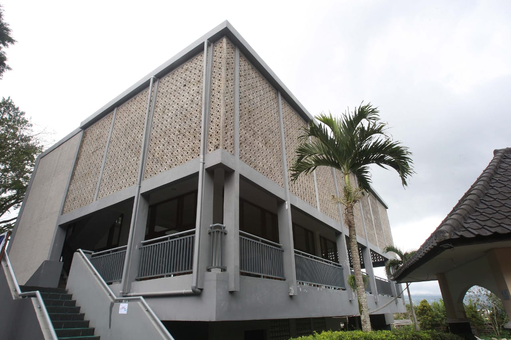

Sekolah Menengah Terpadu Darul Hikam menonjol sebagai lembaga unggulan yang memadukan kurikulum Nasional dan Cambridge Internasional secara unik untuk memberikan pengalaman pendidikan yang luar biasa. Pendekatan inovatif ini memastikan bahwa siswa menerima pendidikan menyeluruh yang tidak hanya memenuhi standar lokal tetapi juga mempersiapkan mereka untuk tantangan dan peluang global.
Di Darul Hikam, fokusnya adalah menghasilkan lulusan yang unggul secara akademis sekaligus mengamalkan nilai-nilai Islam yang kuat. Sekolah ini menekankan pengembangan akhlak (karakter) yang unggul, memastikan bahwa siswa tumbuh menjadi individu yang bertanggung jawab dan beretika yang berkontribusi positif terhadap masyarakat.
Kombinasi antara akademisi yang ketat dan pendidikan karakter menciptakan lingkungan yang mendorong siswa untuk mencapai potensi penuh mereka. Pendekatan holistik terhadap pendidikan ini berarti bahwa lulusan Darul Hikam tidak hanya berpengetahuan luas tetapi juga memiliki keterampilan berpikir kritis dan kompas moral yang dibutuhkan untuk menavigasi kompleksitas dunia modern.